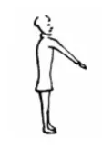

Rune Grimoire
Laguz
Modern Relevance
Laguz is the rune of water and flow. It instructs us to trust the current and release control. Allowing outside forces to assist leads to peace and the correct destination.
Tree, Element, and Deity
Tree: osier
Element: water
Deity: Njord
Meaning: the womb, the sea, the balance of opposites
Names Across Dialects
| Dialect | Word | Meaning |
|---|---|---|
| Proto-Germanic | laguz (or laukaz) | A body of water (or leek) |
| Gothic | lagus | Water |
| Old English | lagu | Sea, water |
| Old Norse | lögr (or laukr) | Sea, water (or leek) |
| Icelandic | Lögur | Water |
| Norwegian | Laukr | Leek, water |
Phonetic value: l
Esoteric interpretation: life energy and organic growth
Ideographic interpretation: a wave, or the quick-growing green portion of the leek
The Law of Life
Laguz is the basic life energy in the multiverse and the secret source of all organic life. Laguz is the law (Old Norse lög) of life, throughout all the multiverse as well as in Midhgardhr. These are the layers (laws) of past cosmic and human action that govern the future development of life forms.
The L-rune represents the primal waters in Niflheimr that contain the latent, amorphous potential of life, which must be solidified as ice and energized by the fire of Muspellsheimr before the potential can be actualized in manifested pattern.
Initiation into Life and Death
This is a potent rune of initiation, especially the initiation into life. In heathen times a newborn child was sprinkled with water and given its name, after it had shown itself worthy of life. This reintegrated the child into the life force of its clan. The mystery of vatni ausa (the ritual of sprinkling with water) predates Christian influence and is a feature of the ancient Nordic doctrine of rebirth (aptrburdhr). The functions of the U-rune (Uruz) and L-rune are closely interrelated on different levels.
Laguz also includes the watery rite of passage at the end of life: the crossing of the primeval waters to the realm of the dead. The myths of Odin as the ferryman of the souls are important in this regard. The ship burials of the Vikings and the symbolic water crossing indicated by them are also illustrative of this belief.
The Leek and Herbal Magick
The form laukaz also means "leek," which is expressed in the Old Norse rune name laukr. This is a symbol of organic growth, phallic power (virtue), and fertility in the physical as well as spiritual realms. The L-rune rules over the lore of herbal magick, known in Old Norse as lyf and in Old English as lacnunga. The itrlaukr (shining leek) was often given to a young warrior once he had proved himself.
Rune Character
Conceals and symbolizes the unknown. Reveals and counteracts poisons. The hidden is revealed. Assists in the awareness of energies and enhances one's sensitivity. Good for dowsers and pendulum workers. Helps in astral work. Can be used to enhance physical and psychic strength. Used in feminine magick and masking the forces of other runes.
Keywords
- Life
- Primal water
- Passage to and from life
- Growth
- Vital power
Galdr
laguz laguz laguz
lu la li le lo
lug lag lig leg log
ul al il el ol
lo le li la lu
Stadha
Stand erect with both arms stretched straight out in front of the chest, slanted downward. The palms point to the ground. Practice also with palms pointed up.

Magickal Workings
- Guidance through difficult initiatory tests
- Increase in vitality and life force
- Gathering of amorphous magickal power for formation and structuring by the will
- Increase in "magnetism"
- Development of "second sight"
- Revealing and counteracting poisons
- Enhancing sensitivity and energy awareness
- Astral work
- Feminine magick and masking the forces of other runes
Constructive Applications
Conceals and symbolizes the unknown. Reveals and counteracts poisons. The hidden is revealed. Assists in the awareness of energies and enhances sensitivity. Good for dowsers and pendulum workers. Helps in astral work. Enhances physical and psychic strength. Used in feminine magick and masking the forces of other runes.
Stadhagaldr Rites
Success and Victory
Laguz causes all good to wax and grow:
Make all the good wax great.
See Stadhagaldr (Posture Magick) for the full rite.